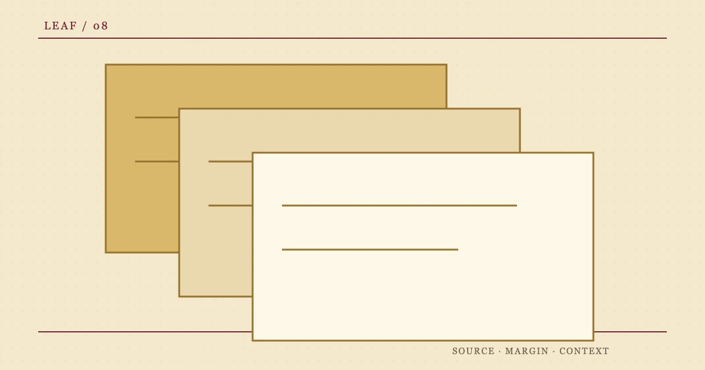

合页袋 / 08
%%F8_TITLE%%
%%F8_SUMMARY%%

- 编者
- %%AUTHOR_NAME%%
- 入册
- 复看
- 状态
- %%F8_STATUS%%
本页折痕目录
%%F8_H2_1%%
%%F8_TEXT_1%%
%%F8_MODULE_HEAD_1%%
%%F8_MODULE_TEXT_1%%
%%F8_MODULE_HEAD_2%%
%%F8_MODULE_TEXT_2%%
%%F8_MODULE_HEAD_3%%
%%F8_MODULE_TEXT_3%%
%%F8_H2_2%%
%%F8_TEXT_2%%
| %%F8_TABLE_COL_1%% | %%F8_TABLE_COL_2%% | %%F8_TABLE_COL_3%% |
|---|---|---|
| %%F8_TABLE_ROW_1%% | %%F8_TABLE_CELL_1_1%% | %%F8_TABLE_CELL_1_2%% |
| %%F8_TABLE_ROW_2%% | %%F8_TABLE_CELL_2_1%% | %%F8_TABLE_CELL_2_2%% |
| %%F8_TABLE_ROW_3%% | %%F8_TABLE_CELL_3_1%% | %%F8_TABLE_CELL_3_2%% |
宽表在此纸页区域内横向滚动。
%%F8_H2_3%%
%%F8_TEXT_3%%
%%F8_QUOTE%%
%%F8_QUOTE_SOURCE%%
%%F8_H2_4%%
%%F8_TEXT_4%%
%%F8_H2_5%%
%%F8_TEXT_5%%
%%F8_FAQ_TITLE%%
%%F8_FAQ_Q_1%%
%%F8_FAQ_A_1%%
%%F8_FAQ_Q_2%%
%%F8_FAQ_A_2%%
%%F8_SOURCES_TITLE%%
- %%F8_SOURCE_LABEL_1%%
%%F8_SOURCE_NOTE_1%%
- %%F8_SOURCE_LABEL_2%%
%%F8_SOURCE_NOTE_2%%
来源复核：